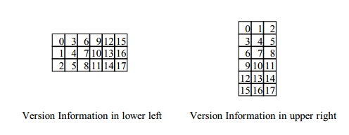
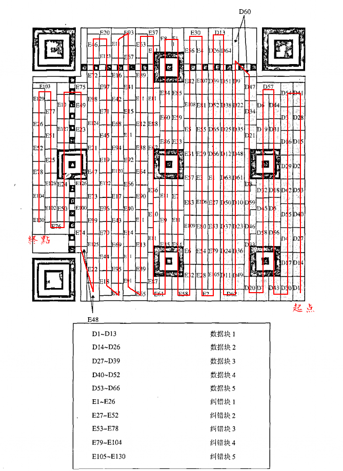
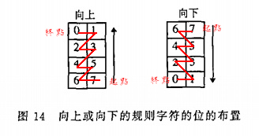
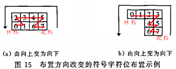
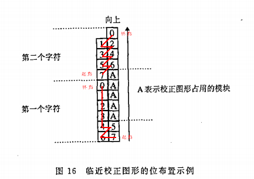

QR码编码区填充方式
QR码的编码区包括格式信息、版本信息以及数据码字和纠错码字。

格式信息的填充

格式信息位共有15位，包括：5个数据位和10个用BCH（15,5）编码计算得到的纠错位。数据位的前两位是纠错等级指示符。第三到五位是为数据掩模图形参考（the data mask pattern reference）
| 纠错等级 | L | M | Q | H |
|---|---|---|---|---|
| 二进制 | 01 | 00 | 11 | 10 |
Table 1 纠错等级指示符
| 掩模图形参考 | 掩模图形 |
|---|---|
| 000 | (i+j) mod 2=0 |
| 001 | i mod 2=0 |
| 010 | j mod 3=0 |
| 011 | (i+j) mod 3=0 |
| 100 | ((i div 2)+(j div 3)) mod 2=0 |
| 101 | (i j) mod 2 + (i j) mod 3=0 |
| 110 | ((i j) mod 2 + (i j) mod 3) mod 2=0 |
| 111 | ((i j) mod 3 + (i j) mod 2) mod 2=0 |
Table 2 掩模图形
纠错位的计算
例：
设：纠错等级为M(二进制符=00)；掩模图形参考=101
则：5个数据位为：00101
纠错位的计算：
以数据位为系数的生成多项式为：x2+1
将系数升至10(=15-5)：x12+x10
被G(x)=x10+x8+x5+x4+x2+x+1 除：=(x10+x8+x5+x4+x2+x+1)x2+(x7+x6+x4+x3+x2)
则剩余多项式为：x7+x6+x4+x3+x2
系数为：00110 11100
格式信息数据串为：00101 00110 11100
用掩模图形进行XOR运算：10101 00000 10010
结果为：10000 00110 01110
纠错译码
==Wait==
版本信息的填充
版本信息位共有18位，包括：6个数据位和12个用BCH（15,5）编码计算得到的纠错位。最高位为第一位。只有版本7~40的符号包含版本信息，没有任何版本信息的结果全为0。所以不必对版本信息进行掩模。


纠错位的计算
例：
设：QR码的版本为 version 7
二进制串：0001111
将系数升至8(=16-8)：x2+x+1
被G(x)=x12+x11+x10+x9+x8+x5+x2+1 除：=(x12+x11+x10+x9+x8+x5+x2+1)x2+(x11+x10+x7+x4+x2)
纠错位为：剩余多项式的系数=110 010 010 100
版本信息数据串为：000 111 110 010 010 100
计算结果如 Table 3 中的 Version
纠错译码
==Wait==
数据码字和纠错码字的填充

在QR码的编码区域中，符号字符以2个模块宽的纵列从符号的右下角开始布置，并自右向左，且交替地从下向上或从上向下安排。
符号字符以及字符中位的布置原则，如下所列：
1、位序列在纵列中的位置：从右到左，向上或向下应与符号字符的布置方向一致。
2、每个码字的最高位(位7)应放在第一个可用的模块位置，随后的位放在下一个模块的位置。如果方向向上，则最高位占用规则符号字符的右下角的模块。如果方向向下，则最高位占用规则符号字符的右上角的字符。见下图：

3、如果符号字符的两个模块纵列同时遇到校正图形或者定位图形的水平边界，可以在图形的上面或下面继续布置。与编码区是连续的一样。
4、如果遇到符号字符区域的上或下边界（即符号的边缘、格式信息、版本信息或分隔符），码字中剩余的位应改变方向放在左侧的纵列中。见下图：

5、如果符号字符的右侧模块纵列遇到校正图形或者版本信息占用的区域，位的布置形成不规则排列的符号字符，沿着相邻校正图形或版本信息的单个模块纵列延伸。如果字符在可用于下一个字符的两列纵列之前结束，则下一个符号字符的首位放在单个纵列之中。见下图

另外一种方案：
将整个码字序列视为一个单独的位流，将其从最高位开始按从右向左，自下而上（或自上而下）的方向交替布置于两个模块宽的纵列中。并跳过功能图形占用的区域，在纵列的顶部或底部改变方向，每一位应放在第一个可用的位置。
备注：
当符号的数据容量不能恰好分为整数个八位符号字符时，要用相应的剩余位（3、4 或 7）填满符号的容量。